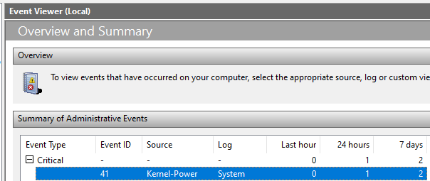

Blue Screen Of Death
If you are experiencing the Blue Screen Of Death (BSOD), it may be due to the sheer amount of tweaks we make to the Windows operating system to achieve what we need to. In this case, follow the directions below to see if they can fix your issue.
Check Event Viewer
Open the Windows Event Viewer and look for a Kernel-Power error in the list of Critical Errors. Open it and find the event from the list and open that event. Click the Details tab and look at the value of BugcheckCode. If it is equal to 307, this problem is most likely related to a corrupted driver or system image.

Repair the system image
In order to fix this, open a Command Prompt window as Administrator, and run
DISM /online /cleanup-image /restorehealth
then
sfc /scannow
to repair the system image.
Clean up temporary files
Next, open the Windows settings to System -> Storage -> Cleanup Recommendations -> See advanced options and select all the options except Downloads unless there is nothing important in there, and click Clean up x bytes. This will remove all temporary files that may have built up on your system.
Update Windows
Next, open the Windows settings to Windows Update and click Check for updates. Also, check in Advanced options -> Optional updates and select/install all of those (if any).
Update graphics drivers
Finally, open Nvidia GeForce Experience to the Drivers section. If there is an update available, install it. Otherwise, click the meatball menu on the right side of the GeForce Game Ready Driver dropdown menu and choose Reinstall driver. Choose Express Installation on the next menu and wait for it to install. Your computer's screen may flicker or go blank temporarily during this process but that is completely normal behavior. Once it is done installing, restart your computer.
These steps should prevent this from happening in the future, but that cannot be guaranteed.